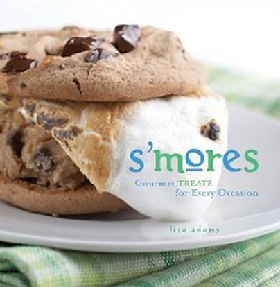

.png)
.PNG)
.PNG)
.PNG)
.PNG)
.PNG)
.JPG)
.JPG)
.PNG)
.PNG)


I thought we would wind up our Summer Camp series by celebrating with food. How does that sound to you? S’mores are the classic choice, but oh my goodness at all the recipes out there that have been inspired by them! There are even whole cookbooks that are devoted entirely to their yummy goodness.

S’mores: Gourmet Treats For Every Occasion
So I have pulled together a number of recipes that are spin-offs of the original s’mores idea of graham crackers, chocolate bars, and toasted marshmallows. (Each of the links will take you straight to their recipe.) We’ll start with Martha’s recipe for them with a homemade graham cracker.
Next…a deliciously rich s’mores fudge bar.
Then we have s’mores cookies…
s’mores cupcakes…
s’mores pizza triangles (that are like the s’mores pizzas we have at our local pizza buffet restaurant.)
And here is one that marries the taste of s’mores with the good old rice krispie treats recipe. Talk about a dream dessert of childhood!
These mini s’more pies are supposed to be super easy, and I like that they are individual servings.
Now we have two different versions of a s’mores cheesecake.
Version 1…
and Version 2.
This girl who loves anything with jars thought this recipe of “s’mores in a jar” was perfect. 🙂
Our Eagle Scout son would be all over these grilled s’more banana boats! (He’ll cook anything at camp as long as it is wrapped in foil.)
And who could resist these s’mores brownie bars?
Let’s not forget a salty alternative with all this sweetness…s’mores popcorn.
There are even breakfast recipes inspired by s’mores! How about…
s’mores doughnuts…
s’mores waffles…
s’mores pancakes…
and even s’mores oatmeal!
Now let’s go beyond breakfast. Could you drink a beverage based on s’mores?
How about a s’mores smoothie?
or s’mores hot chocolate?
or even a s’mores milkshake?
And of course if s’mores can inspire a milkshake, they can certainly make their way into ice cream recipes…
like a s’mores ice cream sundae…
and even into yummy looking s’mores ice cream sandwiches.
The recipe that I really want to try is the one for s’mores dip. Although it looks a bit messy, how could you pass up all that chocolate goodness?!
And finally, our daughter’s birthday is August 10th which also happens to be National S’mores Day! This is perfect because she is the queen of s’mores around here…roasting marshmallows over the stovetop every chance she gets. I am thinking that for her birthday next year, we should try out this recipe for an inside-out s’mores cake. Doesn’t it look divine?
I want to thank everyone for reading the Summer Camp posts. I enjoyed reading all 189 comments that got in before the close of the giveaway. I especially loved the comments about your memories (good and bad!) of summer camp and your dream wedding ideas. And I want to do a BIG thank you to Missy in Knoxville for her comment yesterday with the link to a gorgeous home remodeled by Johnson Architecture (check out the beautiful mirrored sconces in the living room and the fireplace in the kitchen…sigh) and her other link to a video on the charity of the winners of the Extreme Makeover Home Edition house from the last post. It is wonderful that their work for single mothers has now expanded into an entire village. Be sure you read Missy’s comment on 8/23/13.
Let’s wind up our conclusion of the Summer Camp series by announcing the winner of the giveaway package. Who was the lucky winner of the Found, Free, or Flea book by Teresa Surratt, (one of the owners of Camp Wandawega), the blu-ray version of Indian Summer, and a set of marshmallow roasting skewers from Williams Sonoma?
It was this comment (#67) from the Summer Camp – A Wedding at Camp post…

So congratulations to Kayleigh on winning (and on her engagement!) Kayleigh, if you will email me your mailing address, I will get the package out to you asap. I know you will like the book and movie, and I hope you will make some delicious s’mores to enjoy with the man of your dreams.
I hope everyone has a fun fantastic weekend! Perhaps you would like to tackle this project? 🙂
Martha’s Scrumptious S’mores Cake
or maybe this s’mores bar by Amy Atlas?
I think this is more my style for today.

Enjoy your Saturday!


.PNG)
I knew you would love that house!! Truth be told, I loved it before it was redone. They had the most incredible estate sale there before the remodel. The husband had been and engineer and collector of MANY things (stamps, coins…), so all of his things we very organized and neat. The wife had an ENTIRE bedroom that was FULL of linens. It was wonderful. I really just went to the estate sale to look inside the house because I’m weird like that (but I know you understand). It originally had one of those little hidden bars in the family room. I’ve always thought those were so cool. The s’mores recipes are to. Die. For. I can’t decide which one to try first!!! I’m planning some big cooking for football Saturday, so maybe one of these will fit the bill. I will admit here that I don’t really care about football. I just like making pretty food! Have a great holiday weekend!! Missy
———————————————————————
Oh we are definitely sisters separated at birth! Yes…you should go to estate sales just to see the rooms in the house. 🙂 Yes, you should make pretty food for football games and not care one bit about the game! ha ha. Hope all your food turned out delicious!
Kelly
Oh, Kelly, my mouth is watering for a smore. The popcorn looks scrumptious and the rice krispie bars appeal to me. But all of the recipes look noteworthy. Thanks for this.
Karen
———————————————————————–
All that chocolate makes me hungry too! You should make those rice krispie treats. I bet they are good. Of course an original s’more tastes pretty darn good too!
Kelly
Oh, Kayleigh (future bride) will be enjoying that package of goodies for sure. These recipes looked so creative and weren’t they all so artfully displayed! Love that “Martha” s’mores cake. I’ve seen so many recipes out there now, that this must be one of the latest food trends…. I know there has to be a s’mores cocktail recipe too, with say marshmallow infused vodka! Well, here’s to August and end of summer celebrations!
———————————————————————
Ha ha! I did a lot of research to gather the recipes for the post, but I must confess, I did not find a s’mores cocktail. Now that doesn’t mean one doesn’t exist, just that I did not find it. Perhaps you could make a concoction and share it with us? Hard to believe that this summer is really officially gone. I don’t think we actually had one this year! It rained and rained and rained and went by waaaaay too fast.
Kelly
Kelly, thank you so much!! I am so excited – you know how much I love to eat, so this post was perfect. I actually have all the basics to make a regular S’mores but it looks like a grocery store trip is in order so I can make some of these goodies. Thank you again – Josh and I will be having a fun S’mores date soon!
———————————————————————-
Well congratulations, girl! I hope you will share your s’mores with Josh. 🙂 The package is on its way to you and should arrive on Wednesday. I hope you enjoy it all!
Kelly
Wow, you made my mouth water! YUM!
———————————————————————
You should go make a s’more on the stovetop! Easy and yummy!
Kelly
The Forrest Gump of s’mores! I love that comment! Congratulations to Kayleigh!
———————————————————————
I thought that was hilarious too. 🙂
Kelly
My goodness! That is amazing. I never knew there were so many versions of S’Mores. And they all looked mouth watering. I especially want to get the recipe for the one that is made like the one at the local pizza place. Thanks for all your research.
———————————————————————-
It IS amazing how many recipes there are that are spin-offs of the original. And this is just the tip of the iceberg! My kids fight over the one at the pizza place! (I think they like the dessert pizzas better than the regular ones.)
Kelly
It is a lazy August Saturday afternoon– sitting here reading your blog and watching “This Old House”! Reading about all these S’Mores, I remember the first time I made them on a family trial camping trip before we took my Camp Fire Girls on their first weekend camping trip. I got the ingredients for the s’mores and having not ever heard of them or made them– I read the recipe– and much to my embarrassment, I tried to put the Hershey bar on the stick to melt it!! Everyone had a great laugh and said I was going to be a great leader!:) Can you imagine?! So glad I learned how to do them before taking the girls camping!! My Haley’s BD is August 8– just started college this week! Think I’ll go roast a marshmallow– not easy with a glass top stove!:)
———————————————————————-
What a funny story Louvina! I know you are glad you learned the “correct” way to make s’mores before showing your troop of girls. Tell your Haley good luck this year in college. She is only 2 days older than my daughter. 🙂
Kelly
Ok Kelly, you do realize you just became the Forest Gump of s’mores ☺ I love all the messy gooiness of a s’more and the possibility of getting your tongue burned…..as interesting as all these variations look, I don’t think anything can beat the original! Never heard of National S’more day, but I have a son and a granddaughter born around that day, so next year I know what treat I’ll be fixing them!
———————————————————————-
Too funny, Martha! Your August sounds like our August. My birthday, our daughter’s birthday, and our son’s birthday are all within 10 days of each other (not to mention our anniversary and a niece and nephew’s birthday too.) We should both definitely be making that cake!
Kelly